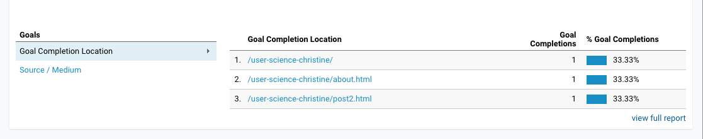

This week concludes the analytic testing of my website - User Science Journal In this third and final blog, I set up an experiment to test whether changing a feature on my website will lead visitors to stay longer and explore more blog posts. This blog discusses how I set up the test and what I learned from it.
Create a hypothesis
Before running any experiments, it’s important to first identify a problem and then create a hypothesis about what I can change to improve it.
Last week I had 3 goal completions:

A closer look shows me that the pages people visited were the home page, about page and blog post 2.
With this blogging website, my aim to is to have people visit and read the blogs. It seemed strange to me that Blog post 1 wasn't getting traffic or taking people to the next blog. I realized on closer viewing that some of my blog posts had a link to “home” at the top to get readers back to the home page for another view, but my first few blog posts were missing that. I got a little ahead of myself and fixed it and then nudged my visitors to visit again. It was only then that I realized I should have waited to fix it as my test--does adding the button for home get people to stay longer and read more blogs?
For this activity, my hypothesis and test had to be a little backward--the test would be to recreate the problem and see if people spent less time on the page without the fix.
Create an A/B test
In my experiment, I decided to test removing a home page button from the first blog post.
I created an Optimize account and created a new experiment: removing the home button.
I set up a variant to test a blog page without the home page link. And I targeted it to go to people in Seattle at 50% weight--half of my viewers would see it with the home page and half without.
I set my objectives to be the same as last week's goals:
Then I gave my viewers a nudge.
Outcomes
I am still waiting for data. I started the experiment late on Sunday morning and I’m waiting on data! I may be able to get data by the evening, but if not, I may just have to update this page later this week.